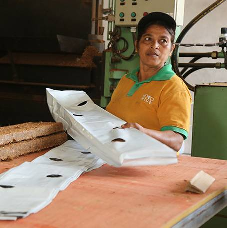
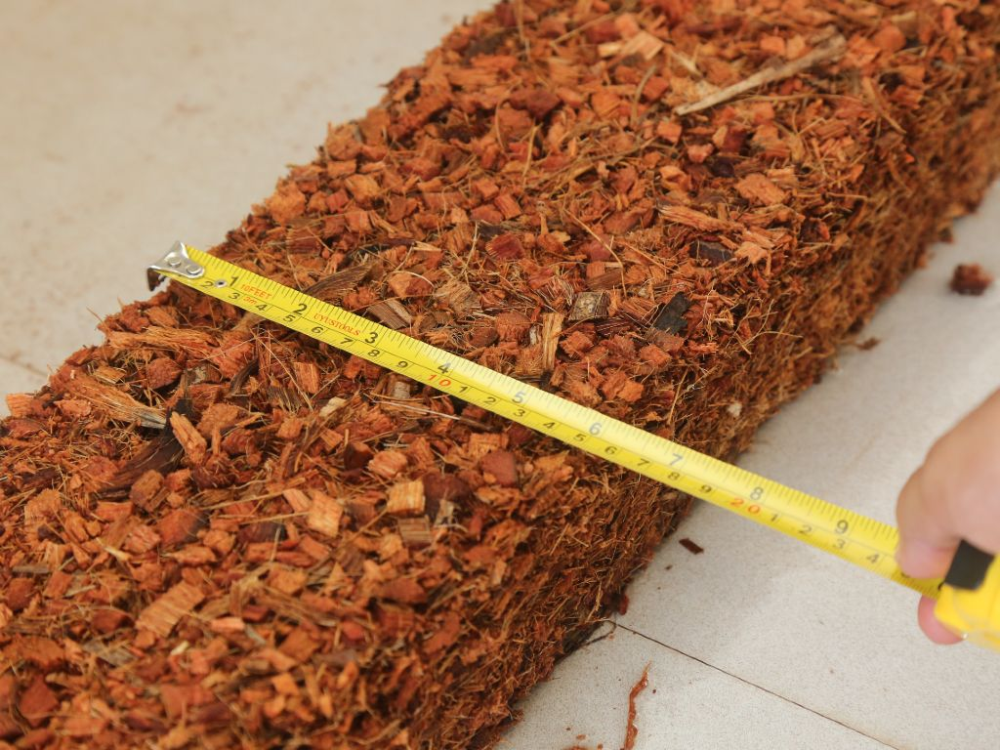

What is ‘COCO’ or ‘COIR' ...?
Terms either ‘Coir’ or ‘Coco’ are used commonly to describe coco peat and coco husk chips. Coco has other names such as coco pith, coco peat, coir fiber pith.......
View Details
Augmenting Sustainable Agriculture
Excelling in growing media
Cocowide Lanka is a globally recognized manufacturer and exporter of high-quality coconut-based substrates. Specializing in eco-friendly growing media, the company provides sustainable alternatives to traditional materials like peat moss and stone wool.
By leveraging the natural properties of coconut husks, Cocowide delivers tailored solutions—including grow bags, blocks, and custom mixes—designed to meet the rigorous demands of professional greenhouse farmers and commercial hydroponic growers worldwide.
At Cocowide, the approach into business revolves around industrial expertise, innovation and sustainability.
We could deliver coir substrates solutions that meet unique needs of our clients with the help of strong presence in both Sri Lanka and India which is combined with our vast industry knowledge, expertise in product development and manufacturing processes, innovative mindset and environmentally sustainable business practices.
Learn More
Terms either ‘Coir’ or ‘Coco’ are used commonly to describe coco peat and coco husk chips. Coco has other names such as coco pith, coco peat, coir fiber pith.......
View Details
Depending on type of plants to be grown, coco peat or a mixture of coco peat and husk chips could be used as a superior growing media to substitute soil.
View Details
Coco is renewable which makes its use a totally environmental friendly process. Thanks to nature’s bounty, it stands out as a renewable growing medium.
View DetailsWhy Us?
We don’t promote our supply; we solve your challenges. At COCOWIDE, we break the industry mold of ‘the word size fits all.’ By staying flexible and willing to learn alongside our partners, we customize every mix and format to your exact needs. Experience the difference of a supplier that delivers exactly what was agreed upon, every time.


Reviews
Consistent quality from the first shipment to the last. The blocks arrived well packed and exactly to the agreed specification.
They were happy to adjust the mix for our propagation nursery and kept us updated at every step. Very easy to work with.
Good low-EC coco peat for our blueberry growers. Communication was quick and the paperwork was always in order.
A dependable supplier. What was promised is what we received, on time, which is exactly what we look for in a long-term partner.
Professional team and clear communication throughout. Recommended for growers who need a reliable substrate supply.
Consistent quality from the first shipment to the last. The blocks arrived well packed and exactly to the agreed specification.
They were happy to adjust the mix for our propagation nursery and kept us updated at every step. Very easy to work with.
Good low-EC coco peat for our blueberry growers. Communication was quick and the paperwork was always in order.
A dependable supplier. What was promised is what we received, on time, which is exactly what we look for in a long-term partner.
Professional team and clear communication throughout. Recommended for growers who need a reliable substrate supply.